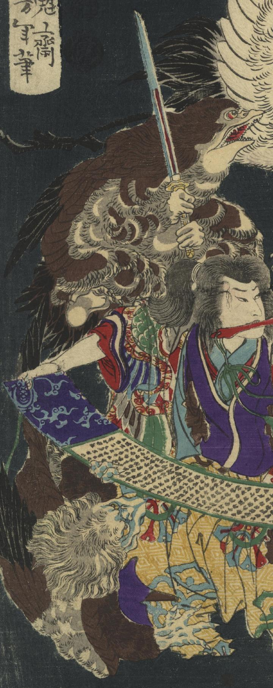

天狗小僧霧太郎の妖術による烏天狗が剣を持って楠胡摩姫に斬りかかろうとしている。
著作者：一魁齋芳年／出典：親書誌：U426_nichibunken_0336：豪傑奇術競；ゴウケツ キジュツ クラベ／日付：2014／資源識別子：U426_nichibunken_0336_0003_0002
Copyright (c)2010- International Research Center for Japanese Studies, Kyoto, Japan. All rights reserved.